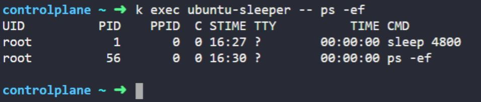
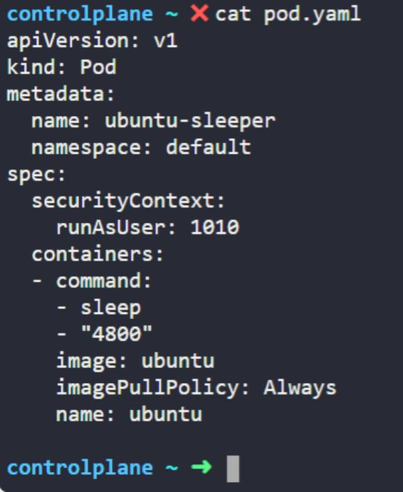
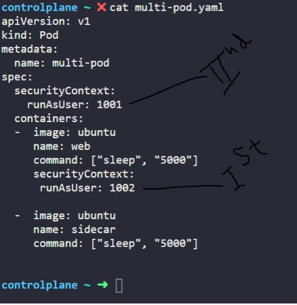
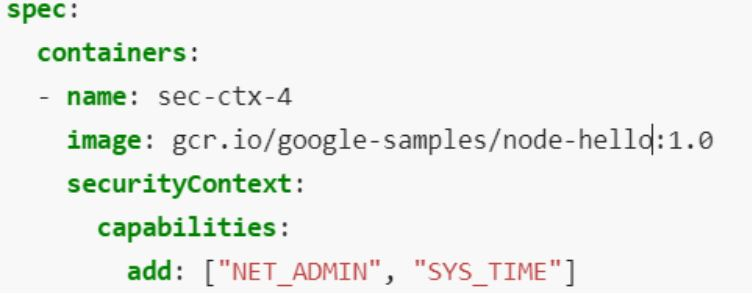

Security context:
What is the user used to execute the sleep process within the ubuntu-sleeper pod?
Edit the pod ubuntu-sleeper to run the sleep process with user ID 1010.
Note : Container level security is alway in first priority.
Also add capabilities :
